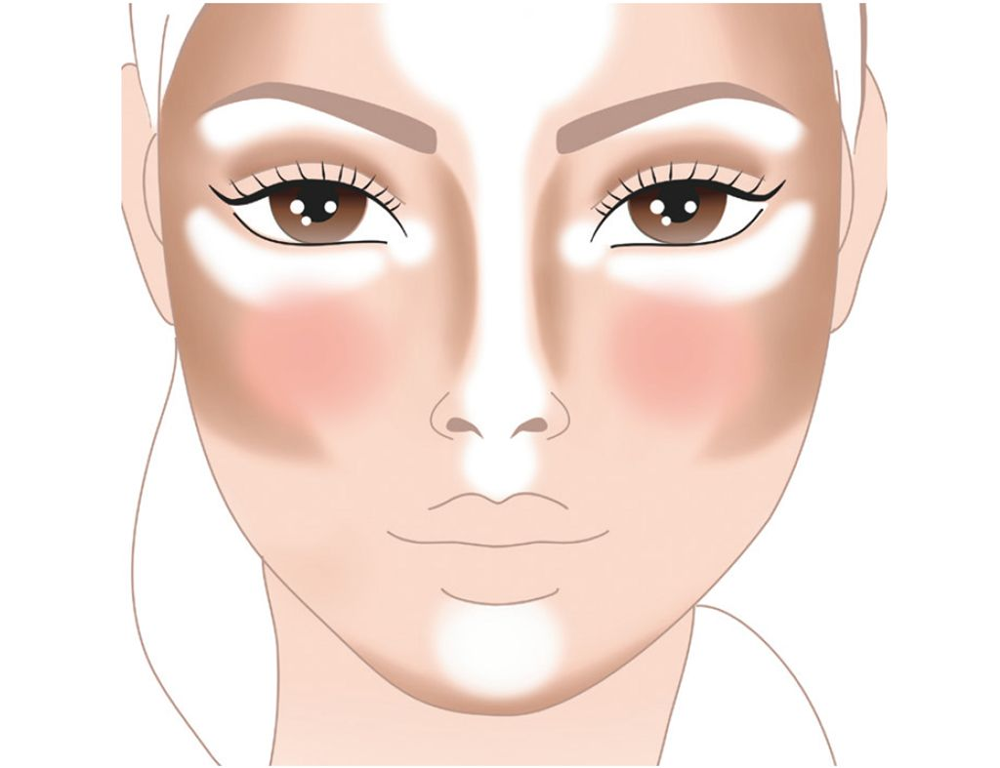

El maquillaje tiene raíces que se remontan a civilizaciones antiguas, como Egipto y Mesopotamia, donde se usaba con fines rituales y estéticos.
Hoy en día, el maquillaje combina arte y tecnología, con técnicas como el contouring y el uso de productos de larga duración.
El maquillaje es una forma de expresión personal y cultural, reflejando tendencias, identidad y creatividad en todo el mundo.